왜 Sqler는 JPA 쓸 때 다들 힘들어할까?
들어가며
개구리 올챙이적 기억못한다고 나의 경우는 잘 모르겠지만, 주변 동료 개발자들이 mybatis, jdbctemplate등으로 sql을 사용하며 개발을 했던 경험자들은 JPA로 넘어오면서 백이면 백 힘들어하는 모습을 보았다. 대체 무엇이 그들을 힘들게 하는 것일까? 이전부터 정리하고 싶었던 글이기에 키보드 앞에 섰다.
SQL에서 JPA로 전환시 무엇이 허들일까?
먼저 답만 생각해본다면 기존에 개발했던 경험들이다라고 생각해본다. 기존에 설계라고하면 db 스키마 설계를 떠올렸는데 JPA를 사용하면 설계는 객체 모델링이 된다. 사실 이 둘의 차이는 별거 아닌데 지도 같은거라 직진으로 금방 갈 수 있는데 결국에는 목적지에는 도달하지만 꾸불꾸불 긴 길을 오랜 시간을 들여 목적지에 돌아가는 것과 비슷한 느낌을 받는다.(또는 건물의 기초공사)
그럼 글로만 하면 이해가하기 어려우니 간단히 코드와 샘플들을 보여주면서 정리를해보겠다.

위의 이미지는 설계 단계에 대한 설명을 특정 서비스의 화면을 캡쳐해 보았다.
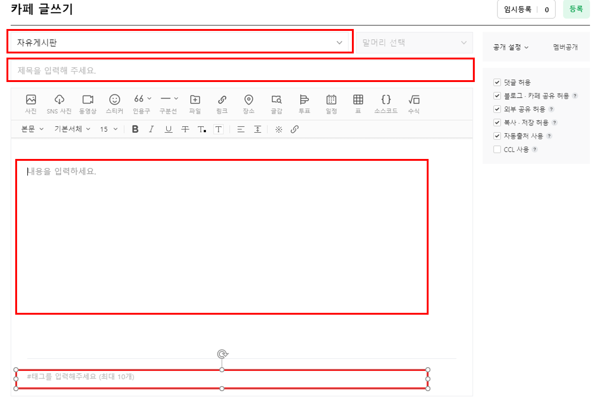
모든 요소들을 다루면 복잡해지니 이미지에서 (위에서부터 순서대로) 게시판 구분, 제목, 내용, 태그만 살펴보겠다.
참고로 게시판 구분의 selectbox를 펼쳐보면.
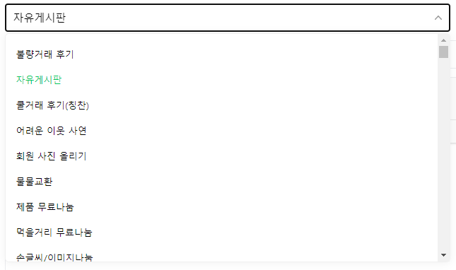
위와 같은 형태이다.
자 그럼 기존의 sqler들은 위와 같은 화면 기획이 나오면 무엇을 먼저할까?

대충 위와 같이 게시판 구분 테이블의 코드 1개를 N개 이상 가지는 게시판 테이블. 그리고 게시판과 연관된 태그 정보를 매핑할 패그 테이블을 떠올릴 것이다.
그리고 이것을 ERD로 그린다면 이렇게 작성할 듯 하다.
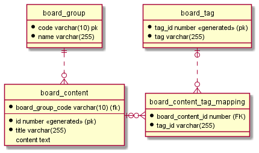
자 그럼 디비 설계를 했으니 create table ddl script를 만들고 이것을 dao 클래스를 만들고 db에서 넘어온 ResultSet을 담을 dto 객체를 만들것이다. 사고의 흐름이 db -> dao -> service -> controller 이런 흐름을 가던것이 보통이다.
자 그럼 JPA를 왜 쓰는 것일까? 바로 윗다넹 나온 db -> dao 레어어를 추상화해줘서 내가 sql을 전혀 몰라도 java만으로 db를 쓸 수 있게 도와주는 솔루션이다.
이 컨셉만 본다면 sql을 전혀 몰라도 된다.
그런데 sqler들은 jpa를 기존의 sql base로 jpa 기술을 접근하는데에서 어려움이 있다.
그것이 무엇이냐하면 sql로 짜면 join으로 심플한데 조인대신 N + 1이 발생한다던가 @OneToMany @ManyToOn 같은 어노테이션을 쓰면서 엔티티 설계도 뭔가 기존보다 어려운것 같고. spring.jpa.generate-ddl나 spring.jpa.hibernate.ddl-auto 이 옵션을 false로 두고 @Entity를 설계하고 이걸 create table을 직접 만드는 것이다. 그리고 spring.jpa.show-sql을 true로 걸고 모든 동작들의 sql을 확인해가며 sql의 동작을 검증하고 sql이 어떻게 나오는지 궁금증을 참지 못하는 것이다.
그래서 듣는 대표적인 말들이 하이버네이트(또는 JPA)의 쿼리는 비효율적인 것 같아요.인듯하다.
처음에는 나도 이 말에 동의를 했으나 시간이 지나면서 조금 생각이 달라졌다.
세상의 모든 기술은 트레이드오프가 있다.(다른 말로는 등가교환)
아무튼 JPA란 기술이 왜 나왔고 이 기술을 왜 써야하는지 배경을 먼저 이해한다면 SQL과 단순 비교에 대한건 접근 방식이 틀리다는 것이다.
JPA를 써야하는 배경중에 혹자는 다양한 Dialect를 제공하기 때문에 mysql, mssql, oracle, h2… 등등 다양한 ANSI SQL이 아닌 limit, rownum 같은 특정 rdbms에만 있는 문법들에 대한 대응을 안해줘도 되서 편하다는 말을 하며 JPA를 극찬하는데 지금 시점에서 그 말은 그냥 syntax sugar같은 느낌일뿐 내가 생각하는 JPA의 본질은 메모리에 있는 자바 객체를 영속화하고 싶다가 아닐까 조심히 생각해본다.
JPA란 이름도 Java Persistence API인 것을 보면 아주 틀린말은 아닌것 같다.
그럼 여기서 영속(persistence)란 단어의 뜻을 살펴보면. 보통은 jvm의 힙메모리… 물리적으로는 RAM이라는 메모리에 있는 객체들은 영속이라는 단어를 쓰지 않는다. 다들 알다싶이 컴퓨터의 전원이 내려가면 날라가기때문에 휘발성이란 특성을 가진다. 그렇기 때문에 전원이 내려가도 유지되는 영속이란 특성을 갖기위해서는 SSD나 하드디스에 저장하는 것처럼 비휘발성 메모리에 저장을 하게 된다.
관계형데이터베이스(RDBMS)는 당연히 영속 데이터를 관리하므로 jpa의 persistence의 단어에 걸맞는 저장소이다.
그러면 rdbms뿐만 아니라 file, nosql, 기타등등 다른 영속데이터를 만들수 있는 다양한것들을 통해 저장할수 있는거 아닌가하는 생각을 할 수 있다.
이런 생각을 하게 된다면 스택오버플로우에서 Does JPA only refer to RDBMS(JPA는 RDBMS만 가리킵니까)라는 질문을 만날수 있다.
그렇다 나만 이렇게 생각하는게 아니라는 것이다.(또 한편으로는 이름을 약간 오해할 수 있게 짓기도 했다.)
참고로 여기 답글중에는 이런 내용들들도 있다. JPA only defines standard mappings for relational data. But many JPA providers support non-relational data as well. (JPA는 관계형 데이터 표준 매핑만 정의합니다. 하지만 많은 JPA 프로바이더들은 비관계형 데이터도 지원합니다.)
JPA 프로바이더들중에 그렇다고하니 한번 찾아보면

hibernate ogm이라는 프로젝트에 가보면 위와 같이 rdmbs가 아닌 nosql를 위한 jpa 솔루션을 제공하는 것을 볼 수 있다.
자… 그럼 persistence란 단어를 가지고 제법 길게 글을 이어 나갔는데.
그럼 이제 내가 하고 싶은 이야기는 또다른 (JPA) 세상을 만날 땐 (SQL은) 잠시 꺼두셔도 좋습니다이다.

이 짤을 쓰기위해 글을 쓰기 시작했던건 아니다
–
JPA(hibernate) 내부 동작 (entity’s lifecycle)
자 그럼 JPA는 자바의 데이터를 영속화하고 싶다는 요구사항이니 이 요구사항을 구현하기 위해서는 뭐가 우선적으로 필요할까?
우선 java에는 메모리에 객체는 어짜피 원래 있던것이므로 이 메모리에 있는 객체를 persistence 영역과 sync할 수 있는 무언가가 있으면 끝이다.
이미 위에도 쓰긴했지만 sync할 영속 데이터가 파일이든 nosql이든 뭐가 됐든 상관없지만. EE 기술의 역사적인 이유로 아마도 rdbms만 선택되어진 것 같다.
그래서 sql이 어떻게 돌아가든 일단 don’t care하고 java객체 rdbms간 동기화를 하는 방법에 대해서 살펴보도록하자.
먼저 JPA spec의 문서를 살펴보면1 Entity Instance’s Life Cycle라는 챕터가 있다.
(참고)spec 문서는 어려워서 본인도 다 읽지는 못하고 대충 뭐가 있는지만 기억해두는데. 암튼 spec문서를 보면서 깝깝한건 엔티티 인스턴스의 life cycle정도는 그림 한장 넣어주면 어디가 덧나나 싶다. 하이버네이트 문서도 마찬가지…2
일단 시각화 잘되어있는 자료를 이미지 검색을 hibernate lifecycle 또는 jpa lifecycle 이 두 검색어들로 검색을 해보면 제법 많은 양의 설명 글들을 볼수가 있다.
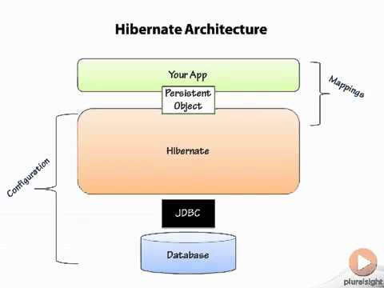
위의 이미지에서 보면 hibernate는 내가 만드는 app간에 persistence object가 브릿지처럼 연결되는 것을 볼 수 있다.
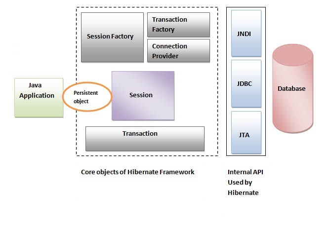
(참고) 이전 그림보다 더 하이버네이트를 디테일하게 설명해주는 그림이 있어서 욕심상 한번 넣어봤다.(이전 이미지만 이해해도 내용 전개상에는 무리가 없다.)
자 그럼 지금까지의 이미지는 hibernate의 architecture라면 이제는 hibernate의 lifecyle을 시각화한 이미지를 살펴보다.
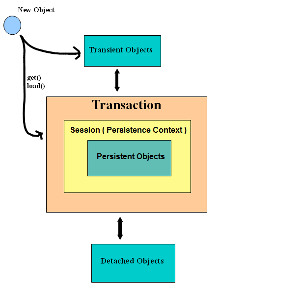
이 그림에서 중요하게 볼 것은 Transaction이라고 써놓고 영역을 차지한 박스이다. 이 Transaction이라는 영역에서만 db와 java object간에 sync가 이루어진다.
(잡설)워워… 성미 급하신 보이는데 open session in view는 차후 얘기하기로하자..
안할예정
(잡설) 은근 저 transaction이라고 써있는 박스에 대해 이해가 없이 코딩을 먼저 하다보니종종 왜 동작을 안하죠하는 질문들을 들음.
transaction 영역을 설명하면 session이라는 영역이 있다. 이미지에서 보면 persistence context인데 요게 EntityManager랑 연관이 깊다. 과거 버저의 스프링 부트를 썼다던가 부트를 쓰지 않는다면 EntityManager를 @PersistenceContext라고 @Autowired 대신 써있는 코드를 보신분들도 제법 있을것이다.
(참고) query method만 쭉 써본분들은 Repository만 썼을것이므로 EntityManager를 모르시는분들도 가끔 만난다. 실제로 EntityManager를 사용해서 조작해보면 좀 더 로우레벨을 조작할수 있어서 lifecycle에 대한 이해가 더 쉽다. 뒤에 나오는 lifecycle에서 find, save, update등등 이미지에 나오는 메서드들은 EntityManager가 제공하기 때문이다.
다시 내용을 이어가서 왜 스프링은 @Autowired가 아니라 얘만 특이하게 @PersistenceContext를 썼는지 이해하려면 좀더 길게 할말은 있지만(혀가 길면 잘모른다는 얘기) 일단 스프링보다 JPA이기 때문 이부분에 대한 내용을 다루지 않고 중요한건 Session(Persistence Context)이라는게 있다는 것이다. transaction안에서 session이 만들어지고 이 session 안에서만 persistence object가 만들어지는 것이다. 즉 이 조건을 만족하면 rdbms에 저장(DML6)되는 것이고 저장이 되었으니 나중에 불러올 수(select)도 있는 것이다.
자 그럼 조금더 복잡한 그림을 찾아보았다.
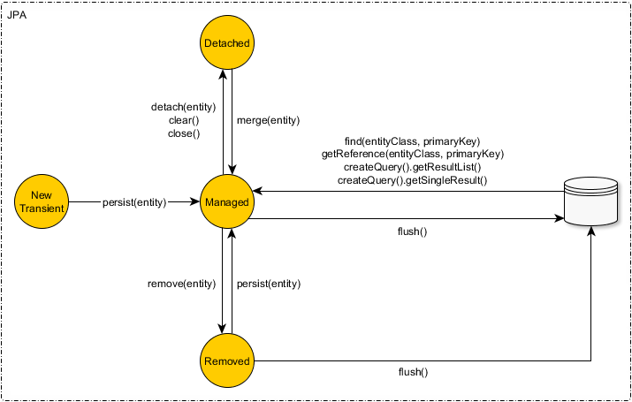
위의 이미지는 JPA의 EntityManager의 method가 실행되는 hibernate의 lifecycle(또는 상태(state))를 정리한 이미지이다.
(참고) JPA는 EntityManager hibernate는 Session이다. 둘다 컨셉은 같은데 구현체가 다르다.
(참고) 여기서는 JPA와 하이버네이트의 차이점을 모르시는 분들을 위해 JPA는 spec 하이버네이트는 구현체이다. 그런데 jpa 스펙을 구현한 구현체도 있고 hibernate 자체적으로 구현한 구현체도 있다. 그래서 hibernate만 쓸때 JPA 스펙을 구현한 EntityManager를 쓸 수도 있고 hibernate가 구현한 Session을 쓸 수도 있는것이다. 보통 spec은 범용적인 특성상 좀더 기능이 적은편이다.)
스펙과 구현체를 디비처럼 관계로 보면 스펙은 1 구현체는 N의 형태이다. 스펙을 정하기 위해서는 여러 업체에서 의견을 내고 합의를해서 표준을 정하고.jcp에서 확인할 수 있다. jcp는 다음에 정리하는걸로… 이 스펙을 가지고 구현체를 만드는건 다시 각 업체에서 따로 만드는 경우가 일반적이다. 예를 들면 JDBC는 스펙이고 JDBC 구현체는 oracle, mysql, mariadb, mssql, posgres, h2… jdbc vendor list란 키워드로 구글링해보니 생각보다 많다는 것을 알게 되었다.
(참고) 구글링을해보면 아래의 이미지처럼 기존에 managed라고 되어있는 state가 persistence라고 써있는 것들도 있어서 찾아보니 hibernate, jpa 둘다 managed란 용어를 공통적으로 사용하고 있으므로 jpa 관련 state 용어로는 persistence란 용어는 쓰지 않겠다.
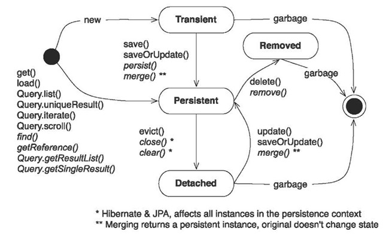
(위의 이미지는 참고용..)
다시 위의 이미지로 돌아가서 아까 위에서 Transaction/Session 박스 영역이 위의 이미지에서는 Managed state이다. 대략 session에서만 select/DML6이 JPA를 통해 이루어진다.
위 이미지를 대략적으로 설명해보면 @Entity가 붙은 class를 “new 생성자()“를 통해 객체를 만들면 일단 Transient9 상태이다.(단기체류자란 뜻처럼 영속 상태의 반대 느낌이 든다.) 이 transient 상태에서 Managed 상태로 만들기 위해선 persist 메서드를 통해서 이제 JPA가 관리하는 상태가 된다.(이때는 관리이지 객체가 영속화(persistence)되지 않았다.) 이 Managed상태의 객체를 영속화하기 위해서는 flush 메서드를 통해 디비에 저장이 된다.
지금의 flow는 새로운 entity를 디비에 저장하는 절차였다.
만약 디비에 값이 존재한다면(select 상황) EntityManager의 find를 통해 RDBMS에 있는 정보를 JPA의 @Entity 객체로 바로 읽고 그 @Entity 객체는 JPA에서 관리하는 Managed 상태를 가진다. 이제 detached, remove란 이름에서 알 수 있듯이 얘네들은 JPA에서 관리하지 않는 상태로 빼는거고 어쩌다가 한번 detached 상태에서 merge 메서드를 통해 객체를 다시 managed 상태로 바꿔주는 경우도 있다.
(참고) 스프링 @Transactional이 붙어있으면 자동으로 flush가 이루어진다.
(참고) 개인적으로는 JPA를 학습할때 이 lifecycle을 먼저 이해하고 @Entity 설계를 학습하는게 좀더 낫지 않나라는 생각을하고 있다.(근데 이것도 상당히 추상적이라 실제 돌아가는 코드를 보지 않고는 이해가 안가므로 닭이 먼저냐 달걀이 먼저냐같은 느낌은 있다.)
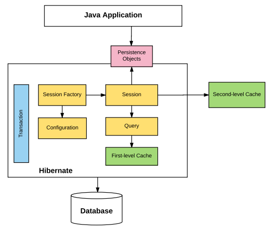
(참고) 여기까지 이해를 했다면 위의 이미지의 hibernate의 first-level cache를 이해하기위한 대략적인 준비는 되었지만 지금 이 이야기를 진행하면 이야기가 산으로 가므로 맥락상 넘어가겠다…
안하겠다는 얘기
자 그럼 JPA(또는 hibernate)의 lifecycle을 살펴봤으니 이를 기반으로 @Entity 설계하는 부분에 대해 이야기를 해보자.(정말 이렇게 글이 길어질줄 몰랐다…시작을 했으니 끝을 봐야지…)
Entity 설계
글을 이어가기 전에 용어를 정리하면
- 복합키(Composite key): 컬럼을 두개 이상 쓰는 PK(키)
- 자연키(natural id): 주민번호같은 비지니스에서 유일함을 보장하는 값을 키로 설정
- 대체키(surrogate key): autoincrement 컬럼처럼 특정 record(row)의 유일을 보장해주는 값을 키로 설정
내가 기억하는 JPA @Entity 설계를 할 때 개인적으로 곤란했던 것은 복합키(Composite key)였다. 디비를 설계할때 워낙에 자연스럽게 많이 쓰곤했었는데 @Entity 설계할 때는 뭔가 복잡해서 상당히 까탈스러웠는데. 이것도 생각해보면 어느정도는 복합키를 쓴다는건 뭔가 JPA way스럽지 않은것 아닐까하는 생각이 든다. 더더욱 JPA답지 않은건 자연키를 쓰는 것이라 볼 수 있다고 생각한다.
복합키를 쓴다는건 예외 케이스가 있겠지만 일단 객체로 바로보지 않고 데이터를 기반으로 @Entity를 설계했다는 반증일수 있고. 또 자연키를 사용했다는것도 이와 같은 맥락으로 해석이 가능하다.
rdbms에 저장되는 data를 기반으로 설계를 하면 무엇이 문제일까? 음… 딱히 문제가 되는 상황을 생각하려니 떠오르지는 않지만… (관심있으신분중에 알려주시면 감사!! 그래도 막연히 주장하는건) 객체를 기반으로 설계를 해야한다는 것이다.
객체! 객체! 객체! 그렇다 db는 잊고 객체를 설계해야한다는 것이다.
우리의 머리속에는 관성이 있어서 sql로 설계를 하던 습관을 벗어나기 힘들다 항상 @Entity를 설계할때 “String이니 varchar로 저장되겠구나 그럼 @Column을 넣어서 length는 10글자로하고 column name은 블라블라블라….” 이런식으로 객체 - sql 번역기를 머리속으로 돌리면서 코딩을 하게 되는데 이게 처음 JPA 배울때 상당히 오버헤드로 작용하는 것을 느낀다.
처음에 JPA를 공부할때는 @Entity랑 @Id, @OneToMany, @ManyToOne, @OneToOne 이런 JPA에서 객체를 persistence하기 위한 annotation 위주로만 사용을하고. @Table, @Column, @JoinColumns RDBMS에 관련한 어노테이션은 어느정도 JPA가 능숙해졌을 때 다루는 것이 좋지 않을까 싶다.(나도 얘들은 잘모름)
왜냐하면 이런것들은 크게 세가지 케이스를 대비해서 만든것이라고 생각하는데
- 레거시 DB에서 JPA를 사용하고 싶을때
- DBA가 만든 룰을 따라야할 때
- DB 퍼포먼스를 높이고 싶을때
필자의 경우는 JPA를 사용하는 케이스는 보통 신규 프로젝트라서 1의 경우는 잘 경험해본적은 없고 DB설계도 내가 직접하다보니 DBA 검수없이 진행하던 경우도 많았다. 마지막으로 3번 DB 퍼포먼스 측면인데. 음… 이정도 단계에 왔으면 JPA 사용법도 능숙해졌을거라 java 코드를 보면 sql도 보일거라서…(그렇다고 믿는다!!) 흠… 아무튼 이건 경험치가 꽤 쌓여야 가능한건데 지금 이야기는 기존 경력자가 JPA를 처음 사용할때의 상황에 대한 이야기이므로 조금은 논외로 하겠다…
아무튼 JPA에서 제공하는 annotation은 @Entity 설계에 관한것과 Database에 관한 것으로 크게 나눌 수 있는데. JPA 입문 단계에서는 @Entity 설계에 관한 것만 학습을 하고 코딩을 하면서 몸에 익숙해지는게 빠르게 익숙해지는 방법이 아닐까 생각한다.
즉 스펙 문서에서 Chapter 2
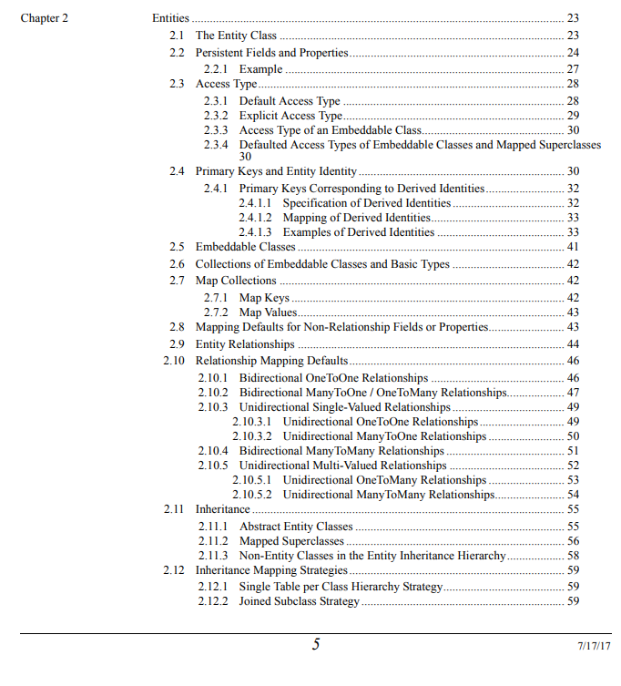
위의 내용들이 다루는 부분을 일단 살펴보고.
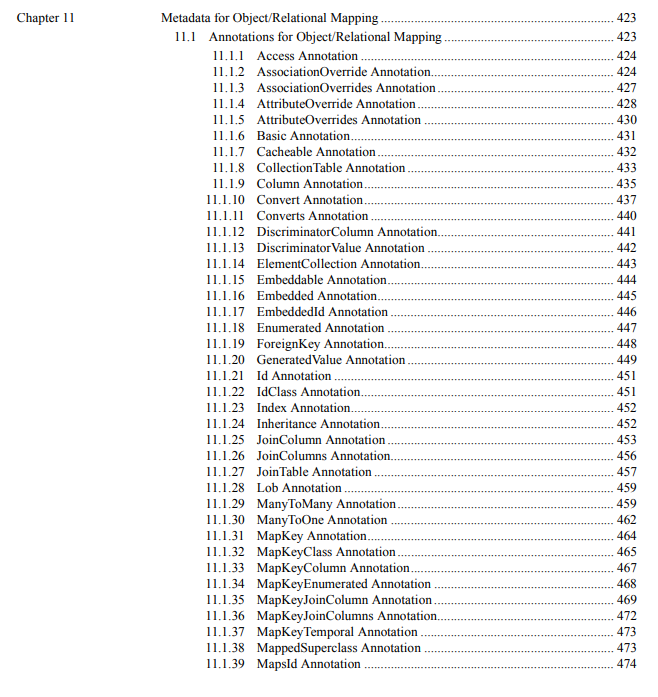
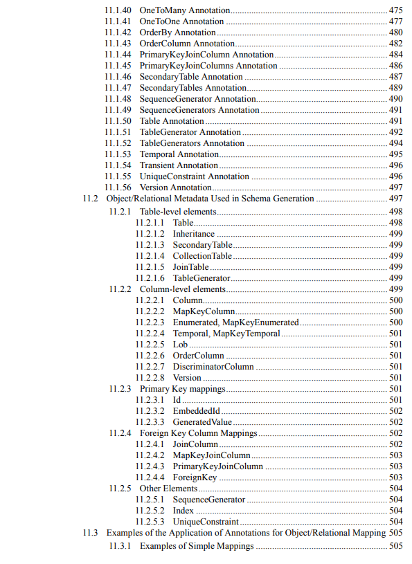
그리고 한참뒤에 Database에 관련한 Annotation을 학습하는게 순서라고 생각하는데 처음에 이 둘을 한번에 학습하는 경우가 많다.(기존 소스를 보면 하나의 @Entity에 같이 혼합되어 있어서…)
참고로 11장 내용에도 @OneToMany등 기존에 @Entity 설계 관련이라고 언급한 것도 있음. spec에서도 완벽하게 구분지어서 설명하지는 않음. 어찌됐든 필수적인 어노테이션이고 이게 db에 연관관계에 영향을 미치므로…(일단 글로 설명하기 위해 구분함)
그리고 jpa spec 문서에서 볼수 있듯이 Entities라는 챕터는 2이고 database에 관련된 Metadata for Object/Relational Mappging은 챕터가 11이다. 중간에 공부할게 한참은 더 있다는…
JPA 은근 볼게 너무 많은데… spring-data-jpa는 그걸 추상화 잘해줘서 편하게 쓸 수 있는거 보면 스프링을 사랑하지 않을 수 없다.
마무리
JPA 기술을 SQL보다는 객체에 좀 더 집중해서 사용하면 더 도움이 된다는 이야기를 쓰기위해 험난한 여정이였다. 좀더 넣고 싶은 이야기들은 있지만 전달하고자하는 내용을 담았다고 생각하기에 좀더 넣고 싶은 글감이 떠오르기 전까지는 이만 정리를 하겠다.
마지막으로 SQLER라는 말을해서 뭔가 sqler에 대한 폄하라는 느낌을 받을 수 있겠다 싶은데. 글로 전달하고자하는 건 sql과 jpa는 다른 것이지 sql이 틀리다는 건 아닙니다. PEACE! :)
참고
미주
-
https://github.com/javaee/jpa-spec/raw/master/jsr338-MR/JavaPersistence.pdf ↩︎
-
https://docs.jboss.org/hibernate/orm/6.0/userguide/html_single/Hibernate_User_Guide.html#architecture ↩︎
-
https://aishwaryavaishno.wordpress.com/2013/06/07/hibernate-persistent-context-and-objects-lifecycle/ ↩︎
-
DML(Data Manipulation Language: 데이터 조작 언어) = INSERT, UPDATE, DELETE SQL ↩︎
-
https://vladmihalcea.com/a-beginners-guide-to-jpa-hibernate-entity-state-transitions/ ↩︎
-
http://what-when-how.com/hibernate/working-with-objects-hibernate/ ↩︎